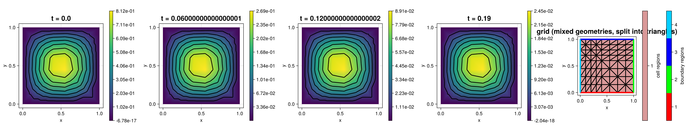

220 : Heat Equation (implicit Euler, mixed geometries)
This example computes the solution $u$ of the two-dimensional heat equation
\[\begin{aligned} u_t - \mu \Delta u & = f \quad \text{in } \Omega \times (0, T] \\ u \lvert_{\partial \Omega} & = 0 \\ u(\cdot, 0) & = u_0 \end{aligned}\]
on the unit square $\Omega$ on a grid with mixed geometries (grid_unitsquare_mixedgeometries builds the unit square from a mix of triangle and parallelogram cells).
The time integration uses the implicit (backward) Euler scheme
\[\frac{u^{n+1} - u^n}{\tau} - \mu \, \Delta u^{n+1} = f(\cdot, t^{n+1}), \qquad \tau = T / n,\]
which gives the linear system
\[(M + \tau \, \mu \, K) \, u^{n+1} = M \, u^n + \tau \, b^{n+1}\]
with mass matrix $M = (\Phi_j, \Phi_i)$, stiffness matrix $K = (\nabla \Phi_j, \nabla \Phi_i)$ and right-hand side $b^{n+1} = (f(\cdot, t^{n+1}), \Phi_i)$. The implicit Euler scheme is unconditionally stable.
The spatial discretization uses the mixed geometry Lagrange element $H1Q1$ ($P1$ space on triangles, $Q1$ space on parallelograms). The local-to-global assembly of $M$, $K$ and $b$ is written low-level, i.e. as explicit assembly loops with one typed (allocation-free) inner loop per unique cell geometry.
The computed solution for the default parameters with initial condition $u_0(x) = \sin(\pi x_1) \sin(\pi x_2)$ (exact solution $u(x,t) = \mathrm{e}^{-2 \pi^2 t} \sin(\pi x_1) \sin(\pi x_2)$) looks like this:

Since the plotter used in the docs build (CairoMakie) can only plot triangle cells, the solution is interpolated onto a P1 space on a triangle-only grid obtained from the mixed grid via split_grid_into before plotting.
module Example220_LowLevelHeatEquation
using ExtendableFEMBase
using ExtendableGrids
using ExtendableSparse
using GridVisualize
using UnicodePlots, Term
using Test #
# initial condition (vanishes on the boundary)
function u0!(result, qpinfo)
x = qpinfo.x
return result[1] = sin(π * x[1]) * sin(π * x[2])
end
# exact solution of the default problem: u(x, t) = exp(-2π² μ t) sin(π x₁) sin(π x₂)
function uexact!(result, qpinfo)
x = qpinfo.x
t = qpinfo.time
return result[1] = exp(-2.0 * π * π * t) * sin(π * x[1]) * sin(π * x[2])
end
function main(;
nref = 2,
T = 0.2,
nsteps = 20,
mu = 1.0,
rhs = (x, t) -> 0.0,
Plotter = UnicodePlots,
)
# Finite element type: mixed geometry Lagrange element (P1 on triangles, Q1 on parallelograms)
FEType = H1Q1{1}
# grid with mixed geometries (triangle and parallelogram cells)
xgrid = uniform_refine(grid_unitsquare_mixedgeometries(), nref)
# FESpace
fe_space = FESpace{FEType}(xgrid)
# solve
history = solve_heat_lowlevel(fe_space, u0!, rhs, mu, T, nsteps)
# separate grid for plotting: the plotter used in the docs build (CairoMakie)
# can only plot triangle cells, so split the mixed grid into triangles and
# interpolate the solution onto a P1 space on the plot grid
xgridplot = split_grid_into(xgrid, Triangle2D)
fe_space_plot = FESpace{H1P1{1}}(xgridplot)
# plot four time levels and the grid
plotsteps = [1]
append!(plotsteps, [round(Int, nsteps * j / 3) for j in 1:3])
plt = GridVisualizer(; Plotter = Plotter, layout = (1, length(plotsteps) + 1), clear = true, resolution = (400 * (length(plotsteps) + 1), 400))
for (j, n) in enumerate(plotsteps)
u_plot = FEVector(fe_space_plot; name = "u(t = $(T * (n - 1) / nsteps)) on plot grid")
lazy_interpolate!(u_plot[1], history[n + 1]; use_cellparents = true)
scalarplot!(plt[1, j], u_plot[1], title = "t = $(T * (n - 1) / nsteps)")
end
gridplot!(plt[1, length(plotsteps) + 1], xgridplot; markersize = 0, title = "grid (mixed geometries, split into triangles)")
reveal(plt)
return history, plt
end
function solve_heat_lowlevel(fe_space, u0!, rhs, mu, T, nsteps)
tau = T / nsteps
ndofs = fe_space.ndofs
# assemble mass matrix M and system matrix A = M + τ μ K once
println("Assembling...")
M = FEMatrix(fe_space, fe_space)
fill_mass!(M.entries, fe_space)
A = FEMatrix(fe_space, fe_space)
fill_system!(A.entries, fe_space, mu, tau)
# fix homogeneous Dirichlet boundary dofs
bdofs = boundarydofs(fe_space)
for dof in bdofs
A.entries[dof, dof] = 1.0e60
end
ExtendableSparse.flush!(A.entries)
# interpolate initial condition
u = FEVector(fe_space; name = "u(t = 0)")
interpolate!(u[1], u0!)
un = copy(u.entries)
history = [u]
b = zeros(Float64, ndofs)
for n in 1:nsteps
t = n * tau
# right-hand side: M u^n + τ (rhs(·, t), ·)
rhsvec = M.entries.cscmatrix * un
fill!(b, 0)
fill_rhs!(b, fe_space, rhs, t, tau)
rhsvec .+= b
for dof in bdofs
rhsvec[dof] = 0
end
# solve linear system
un = A.entries \ rhsvec
push!(history, FEVector(fe_space; entries = un, name = "u(t = $(t))"))
end
return history
end
# ------------------------------------------------------------------
# low-level assembly on grids with mixed geometries:
# one typed (barrier) function per unique cell geometry, so that
# the inner assembly loop is allocation-free
# ------------------------------------------------------------------
# mass matrix: M[i,j] = ∫Ω Φ_i Φ_j
function fill_mass!(M::ExtendableSparseMatrix, fe_space::FESpace{Tv, Ti}) where {Tv, Ti}
xgrid = fe_space.xgrid
FEType = eltype(fe_space)
cellvolumes = xgrid[CellVolumes]
celldofs = fe_space[CellDofs]
xCellGeometries = xgrid[CellGeometries]
loop_allocations = 0
for EG in xgrid[UniqueCellGeometries]
# quadrature formula (exact for the product of two basis functions)
qf = QuadratureRule{Float64, EG}(2 * max(1, get_polynomialorder(FEType, EG) - 1))
weights::Vector{Float64} = qf.w
nweights::Int = length(weights)
# FE basis evaluator
FEBasis_id = FEEvaluator(fe_space, Identity, qf)
idvals = FEBasis_id.cvals
function barrier(EG::Type{<:AbstractElementGeometry})
# barrier function to avoid allocations by type dispatch
ndofs4cell::Int = get_ndofs(ON_CELLS, FEType, EG)
Mloc = zeros(Float64, ndofs4cell, ndofs4cell)
ncells::Int = num_cells(xgrid)
dof_j::Int, dof_k::Int = 0, 0
return loop_allocations += @allocated for cell::Ti in 1:ncells
# skip cells of other element geometries (mixed geometry grids)
if xCellGeometries[cell] !== EG
continue
end
# update FE basis evaluator
FEBasis_id.citem[] = cell
update_basis!(FEBasis_id)
# assemble local mass matrix
for j in 1:ndofs4cell, k in j:ndofs4cell
temp = 0
for qp in 1:nweights
temp += weights[qp] * idvals[1, j, qp] * idvals[1, k, qp]
end
Mloc[j, k] = temp
end
Mloc .*= cellvolumes[cell]
# add local matrix to global matrix
for j in 1:ndofs4cell
dof_j = celldofs[j, cell]
for k in j:ndofs4cell
dof_k = celldofs[k, cell]
rawupdateindex!(M, +, Mloc[j, k], dof_j, dof_k)
if k > j
rawupdateindex!(M, +, Mloc[j, k], dof_k, dof_j)
end
end
end
fill!(Mloc, 0)
end
end
barrier(EG)
end
ExtendableSparse.flush!(M)
return loop_allocations
end
# system matrix for implicit Euler: A = M + τ μ K
function fill_system!(A::ExtendableSparseMatrix, fe_space::FESpace{Tv, Ti}, mu = 1.0, tau = 1.0) where {Tv, Ti}
xgrid = fe_space.xgrid
FEType = eltype(fe_space)
cellvolumes = xgrid[CellVolumes]
celldofs = fe_space[CellDofs]
xCellGeometries = xgrid[CellGeometries]
loop_allocations = 0
for EG in xgrid[UniqueCellGeometries]
# quadrature formula (exact for the products of basis functions and gradients)
qf = QuadratureRule{Float64, EG}(2 * max(1, get_polynomialorder(FEType, EG) - 1))
weights::Vector{Float64} = qf.w
nweights::Int = length(weights)
# FE basis evaluators
FEBasis_∇ = FEEvaluator(fe_space, Gradient, qf)
∇vals = FEBasis_∇.cvals
FEBasis_id = FEEvaluator(fe_space, Identity, qf)
idvals = FEBasis_id.cvals
function barrier(EG::Type{<:AbstractElementGeometry})
# barrier function to avoid allocations by type dispatch
ndofs4cell::Int = get_ndofs(ON_CELLS, FEType, EG)
Aloc = zeros(Float64, ndofs4cell, ndofs4cell)
ncells::Int = num_cells(xgrid)
dof_j::Int, dof_k::Int = 0, 0
return loop_allocations += @allocated for cell::Ti in 1:ncells
# skip cells of other element geometries (mixed geometry grids)
if xCellGeometries[cell] !== EG
continue
end
# update FE basis evaluators
FEBasis_∇.citem[] = cell
update_basis!(FEBasis_∇)
FEBasis_id.citem[] = cell
update_basis!(FEBasis_id)
# assemble local system matrix M + τ μ K
for j in 1:ndofs4cell, k in j:ndofs4cell
tempM = 0
tempK = 0
for qp in 1:nweights
tempM += weights[qp] * idvals[1, j, qp] * idvals[1, k, qp]
tempK += weights[qp] * dot(view(∇vals, :, j, qp), view(∇vals, :, k, qp))
end
Aloc[j, k] = tempM + tau * mu * tempK
end
Aloc .*= cellvolumes[cell]
# add local matrix to global matrix
for j in 1:ndofs4cell
dof_j = celldofs[j, cell]
for k in j:ndofs4cell
dof_k = celldofs[k, cell]
rawupdateindex!(A, +, Aloc[j, k], dof_j, dof_k)
if k > j
rawupdateindex!(A, +, Aloc[j, k], dof_k, dof_j)
end
end
end
fill!(Aloc, 0)
end
end
barrier(EG)
end
ExtendableSparse.flush!(A)
return loop_allocations
end
# right-hand side: b[i] = τ (f(·, t), Φ_i)
function fill_rhs!(b::Vector, fe_space::FESpace{Tv, Ti}, rhs, t = 0.0, tau = 1.0) where {Tv, Ti}
xgrid = fe_space.xgrid
FEType = eltype(fe_space)
cellvolumes = xgrid[CellVolumes]
celldofs = fe_space[CellDofs]
xCellGeometries = xgrid[CellGeometries]
loop_allocations = 0
for EG in xgrid[UniqueCellGeometries]
# quadrature formula
qf = QuadratureRule{Float64, EG}(2 * max(1, get_polynomialorder(FEType, EG) - 1))
weights::Vector{Float64} = qf.w
xref::Vector{Vector{Float64}} = qf.xref
nweights::Int = length(weights)
# FE basis evaluator and local2global transformation
L2G = L2GTransformer(EG, xgrid, ON_CELLS)
FEBasis_id = FEEvaluator(fe_space, Identity, qf)
idvals = FEBasis_id.cvals
function barrier(EG::Type{<:AbstractElementGeometry}, L2G::L2GTransformer)
# barrier function to avoid allocations by type dispatch
ndofs4cell::Int = get_ndofs(ON_CELLS, FEType, EG)
ncells::Int = num_cells(xgrid)
dof_j::Int = 0
x::Vector{Float64} = zeros(Float64, 2)
return loop_allocations += @allocated for cell::Ti in 1:ncells
# skip cells of other element geometries (mixed geometry grids)
if xCellGeometries[cell] !== EG
continue
end
# update FE basis evaluator and transformation
FEBasis_id.citem[] = cell
update_basis!(FEBasis_id)
update_trafo!(L2G, cell)
# assemble local right-hand side
for j in 1:ndofs4cell
temp = 0
for qp in 1:nweights
# get global x for quadrature point
eval_trafo!(x, L2G, xref[qp])
temp += weights[qp] * idvals[1, j, qp] * rhs(x, t)
end
# write into global vector
dof_j = celldofs[j, cell]
b[dof_j] += temp * cellvolumes[cell] * tau
end
end
end
barrier(EG, L2G)
end
return loop_allocations
end
function generateplots(dir = pwd(); Plotter = nothing, kwargs...)
~, plt = main(; Plotter = Plotter, kwargs...)
scene = GridVisualize.reveal(plt)
return GridVisualize.save(joinpath(dir, "example220.png"), scene; Plotter = Plotter)
end
# tests: allocation-free assembly of the low-level loops on the mixed
# geometry grid, monotonic energy decay of the implicit Euler scheme,
# and the error against the exact solution
function runtests(;
nref = 1,
T = 0.2,
nsteps = 20,
mu = 1.0,
)
FEType = H1Q1{1}
xgrid = uniform_refine(grid_unitsquare_mixedgeometries(), nref)
fe_space = FESpace{FEType}(xgrid)
tau = T / nsteps
# the low-level assembly loops should be allocation-free
# after the first pass, which fills the sparse pattern
M = FEMatrix(fe_space, fe_space)
@info "allocations in 1st mass assembly: $(fill_mass!(M.entries, fe_space))"
@test fill_mass!(M.entries, fe_space) == 0
A = FEMatrix(fe_space, fe_space)
@info "allocations in 1st system assembly: $(fill_system!(A.entries, fe_space, mu, tau))"
@test fill_system!(A.entries, fe_space, mu, tau) == 0
b = zeros(Float64, fe_space.ndofs)
@info "allocations in 1st rhs assembly: $(fill_rhs!(b, fe_space, (x, t) -> 0.0, 0.0, tau))"
@test fill_rhs!(b, fe_space, (x, t) -> 0.0, 0.0, tau) == 0
# solve over the time interval
history = solve_heat_lowlevel(fe_space, u0!, (x, t) -> 0.0, mu, T, nsteps)
# discrete energy should decay monotonically (rhs = 0, homogeneous Dirichlet)
Mmat = M.entries.cscmatrix
En = [0.5 * history[n].entries' * (Mmat * history[n].entries) for n in 1:length(history)]
@test all(diff(En) .<= 1.0e-12)
#@test En[end] < 0.01 * En[1]
# error at time T against the FEM interpolation of the exact solution
uex = FEVector(fe_space)
interpolate!(uex[1], uexact!; time = T)
e = history[end].entries .- uex.entries
err2 = e' * (Mmat * e)
@info "error in mass norm at t = T: $(sqrt(err2))"
@test isapprox(sqrt(err2), 5.320626237289539e-4; rtol = 1.0e-10)
return nothing
end #moduleThis page was generated using Literate.jl.